Create, modify and view your first Glitch project.
Upon completion of this lab you should be able to do all of the following:
If you do not have a github account, create one now:
Now sign up for the Glitch service:
This will require you to log in using your github account.
Once you are logged in:
New Project to start a new project, and 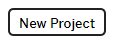hello-express option to display a starter project: 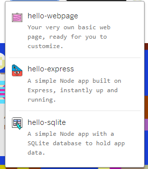A new project is opened with a random name (which we will change shortly).
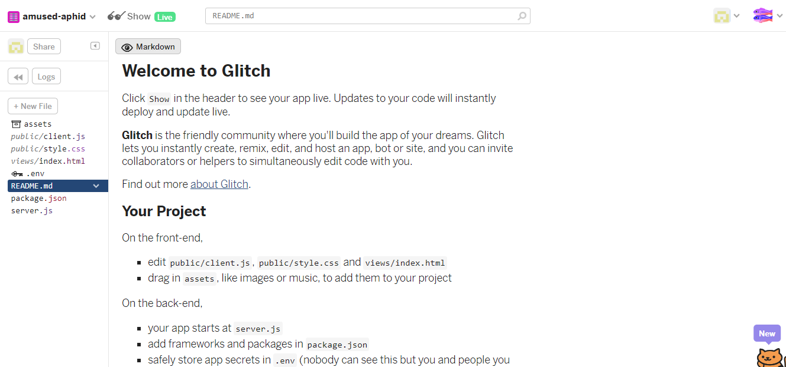
Press the Show button and it will reveal a live version of of the app you have just created:
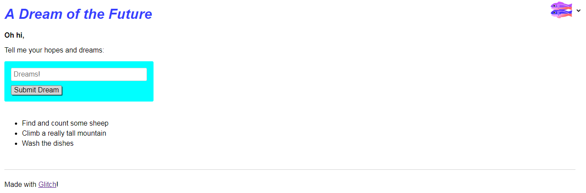
You can interact with this app by entering text in the Dreams box.
Back in the source view, look at the project structure in more detail:
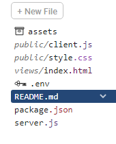
Select each of the files in turn and have a look at the contents. The css and html content will be familiar, but js will require some javascript knowledge we have yet to develop.
Any changes we make here will be directly published live to the cloud. For instance, open index.html and locate the following code:
<main>
<p class="bold">Oh hi,</p>
<p>Tell me your hopes and dreams:</p>
<form>
<input type="text" maxlength="100" placeholder="Dreams!">
<button type="submit">Submit</button>
</form>
<section class="dreams">
<ul id="dreams">
</ul>
</section>
</main>Make some changes to the text, eg:
<p class="bold">Howdy</p>
<p>Tell me your plans for the weekend:</p>Verify that the changed text appears.
Looking at client.js, locate and modify some of the initial bullet items:
// Simple in-memory store for now
var dreams = [
"Find and count some sheep",
"Climb a really tall mountain",
"Wash the dishes"
];Before making changes to this data, turn on logging first by pressing the Logs button.
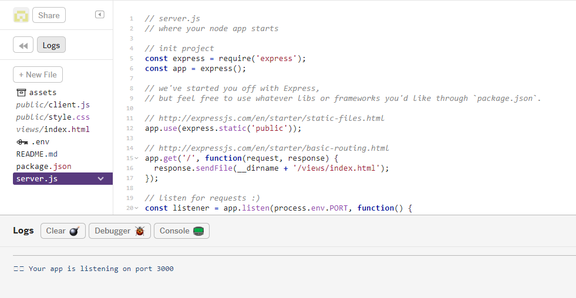
This has reconfigured the view so we can see a new panel along the end of the browser.
As you make changes to server.js, you will see activity in this new panel. Type the following console.log(x); command, since x is not declared this should cause errors.
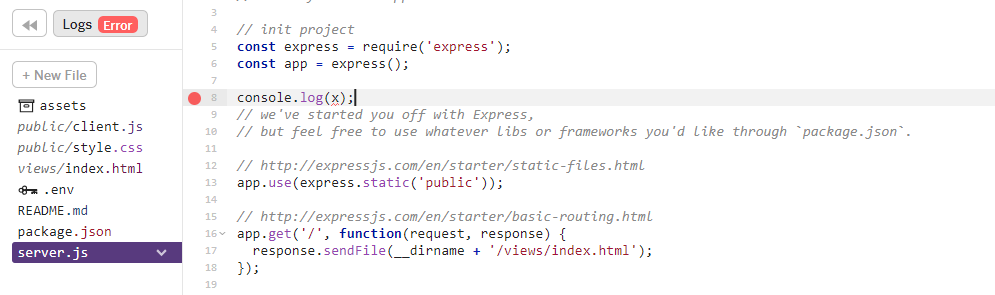 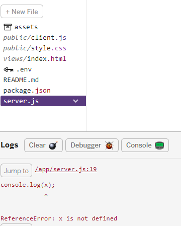
In particular, you will see errors as you type - but if you complete a modification successfully, then the errors will be replaced with a standard app listening message:
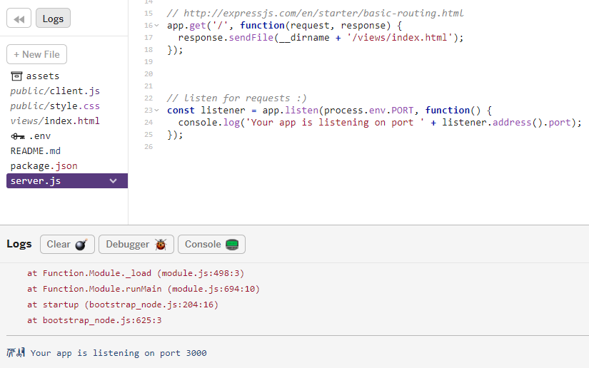
The project name can be changed by directly entering a new name on the sidebar:
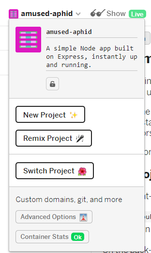
Type a new name such as mllab01-webapp-2019, i.e. a meaningful name such as your initials followed by labnumber and module details.
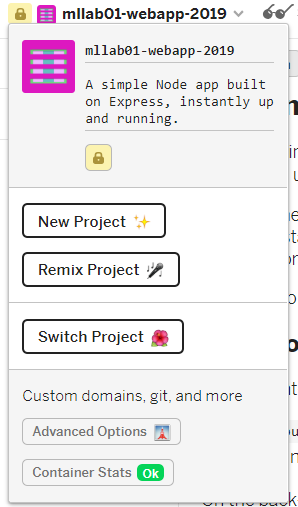
This will also change the project url.
Another useful option is to disable the 'Refresh App on Changes' option:
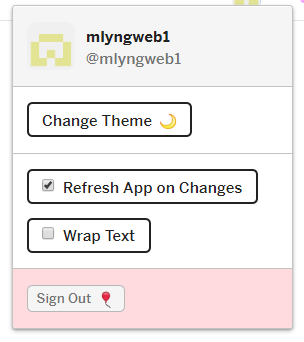
Try this now. The behaviour of this feature can be a little confusing as the log may continue to report errors - but the live app itself will not be refreshed until you reenable the option.
Explore the advanced options:
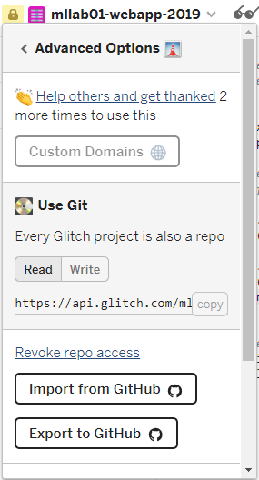
Experiment with of all of these options.
For Export to github, the repository must already exist in your account. The project will, however, be on a different branch from master, so might not be visible at first unless you switch branches.
For Download Project, try the following:
server.js, changing the following statements:// listen for requests :)
var listener = app.listen(process.env.PORT, function () {
console.log('Your app is listening on port ' + listener.address().port);
});to:
// listen for requests :)
const listener = app.listen(process.env.PORT || 4000, function () {
console.log('Your app is listening on port ' + listener.address().port);
});npm install
npm startThe latter command should display something like:
> my-Glitch-app@0.0.1 start /Users/bmullally/webApp1/Glitch/app
> node server.js
Your app is listening on port 4000If you open a browser now on localhost your application should be running locally:
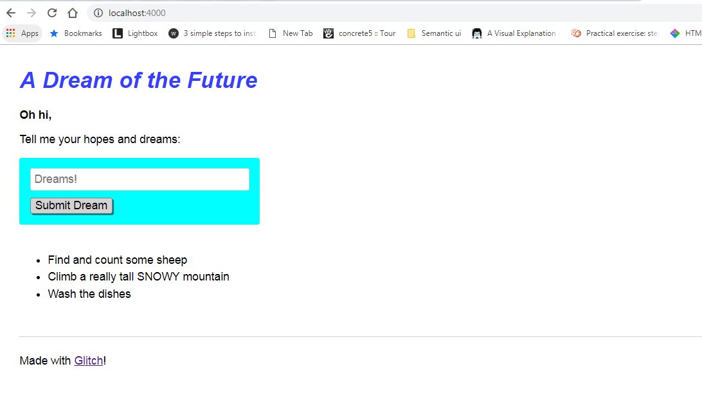
Copy the following file into the <head> section of the index.html file.
<link rel="stylesheet" href="https://cdnjs.cloudflare.com/ajax/libs/semantic-ui/2.4.1/semantic.min.css" type="text/css">And, copy the following files into the <body> section of the index.html file. Place them just before the closing <body> tag.
<script type="text/javascript" src="https://cdnjs.cloudflare.com/ajax/libs/jquery/3.3.1/jquery.min.js"></script>
<script type="text/javascript" src="https://cdnjs.cloudflare.com/ajax/libs/semantic-ui/2.4.1/semantic.min.js"></script>Move the array declaration from client.js to server.js.
const dreams = [
'Find and count some sheep',
'Climb a really tall SNOWY mountain',
'Wash the dishes'
];Add add the following to server.js also:
app.get('/dreams', function (request, response) {
response.send(dreams);
});Modify client.js by replacing:
dreams.forEach( function(dream) {
appendNewDream(dream);
});with
$.get('/dreams', function(dreams) {
dreams.forEach( function(dream) {
appendNewDream(dream);
});
});The app should display the contents of the array (dreams) to the app as before.
Modify client.js again by replacing:
dreamsForm.onsubmit = function(event) {
// stop our form submission from refreshing the page
event.preventDefault();
// get dream value and add it to the list
dreams.push(dreamInput.value);
appendNewDream(dreamInput.value);
// reset form
dreamInput.value = '';
dreamInput.focus();
};with
dreamsForm.onsubmit = function(event) {
// stop our form submission from refreshing the page
event.preventDefault();
const dream = dreamInput.value;
// get dream value and add it to the list
$.post('/dreams?' + $.param({dream: dream}), function() {
appendNewDream(dream);
// reset form
dreamInput.value = '';
dreamInput.focus();
});
};Add the following to server.js:
app.post('/dreams', function (request, response) {
dreams.push(request.query.dream);
response.sendStatus(200);
});The app will now store the dreams in the array on the server (in the cloud), so if you add a dream and refresh the page, it is still there.
Also, as this app is live in the cloud - and this is your own copy of the app - you can share this link with others. Do this now with someone next to you in the lab.
Verify that you each see different lists depending on what has been entered. Enter some 'dreams' into someone else's app.
Examine this view:
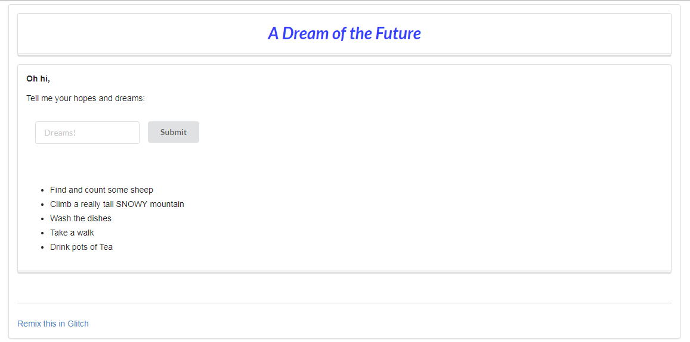
Try to modify index.html to render as above using semantic ui container, segment, header and form classes.
If you are unfamiliar with SemanticUI investigate this website to become familiar with the css styles available: http://semantic-ui.com
See if you can incorporate an image into the page:
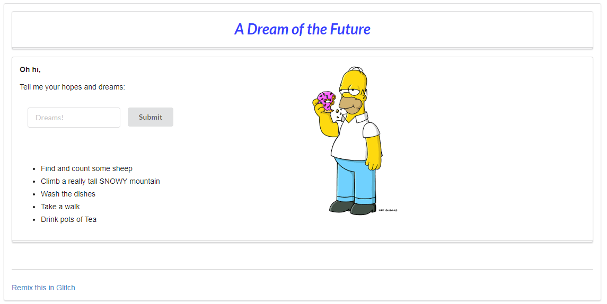
This will require you to:
assets folder.url.<img> tag with this url into index.If you completed the above tasks, download the app again and run it locally (see step 4).
.